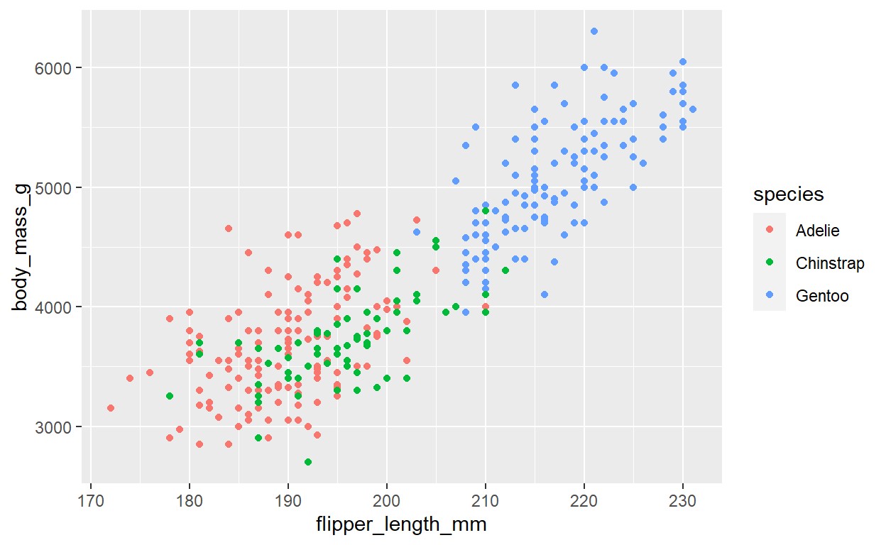
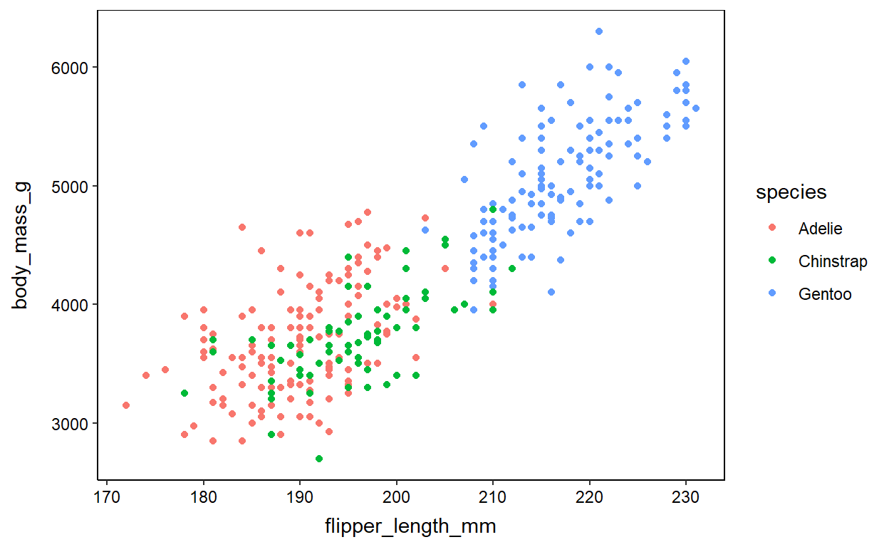
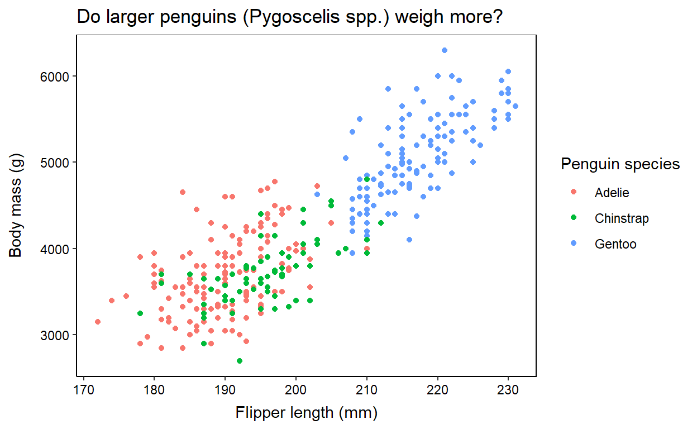
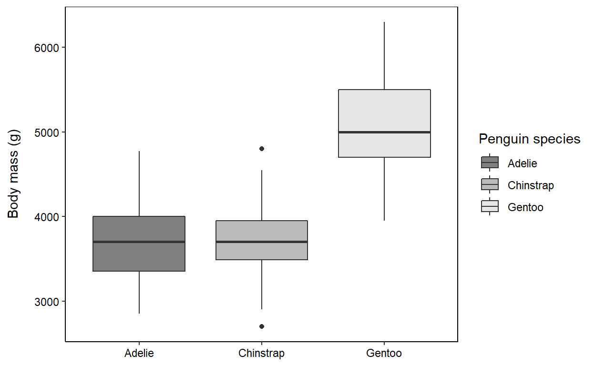
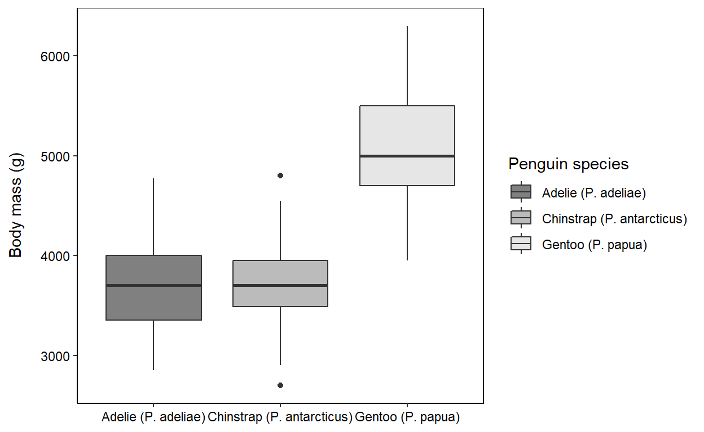
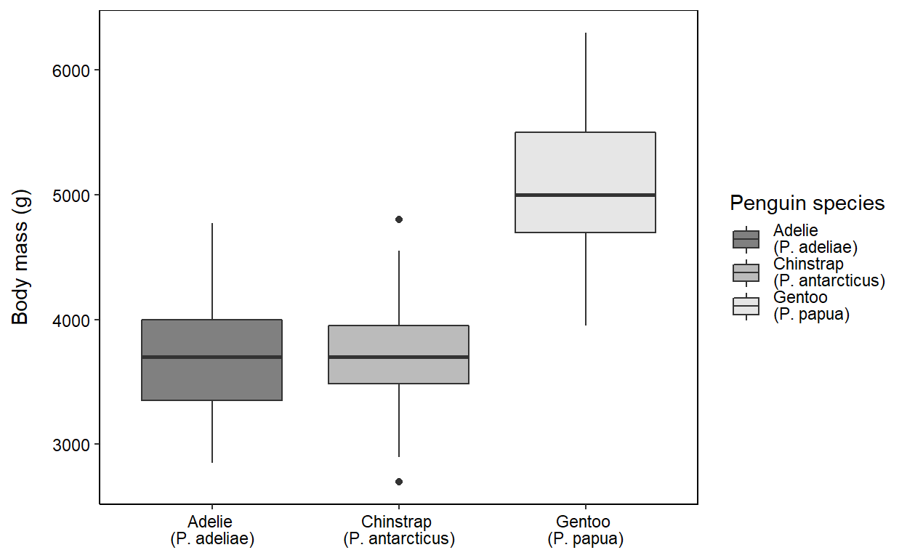
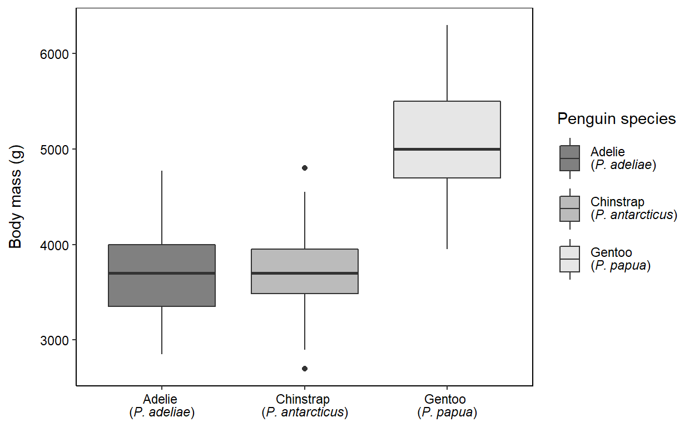

How to add italics to ggplot figures
The scared ecologist often finds themselves needing to make beautiful figures to include in their thesis or a new paper they want to submit to a high-profile journal. They open up R, load the ggplot2 package, make their figure, and save it to their PC… Voila! However, they realise that they actually needed to italicise the names of the species they work on. For example, consider Figure 4 in Towers and Dwyer, 2021, whereby the relationship between plant basal area and stem diameter are plotted for two different plant species (Acacia harpophylla and Casuarina cristata). This often results in many hours of trawling the internet trying to figure out how to do this in ggplot2, often with little success. They then resort to spending hours trying to annotate their plots in programmes such as InkScape or Adobe Illustrator.
In today’s blogpost, I am going to demonstrate a simple way to add italicised species names to your beautiful ggplot2 graphics, and make simple ggplot2 plots look a little neater, without needing to export your figures into other software.
Let’s load the palmerpenguins dataset into R. This dataset contains body morphology measurements for a range of penguin species from the Antarctic islands (Gorman et al. 2014).
# Load raw penguins data
penguins <- palmerpenguins::penguins %>%
# Remove rows containing NA data
tidyr::drop_na(body_mass_g)
head(penguins)
# A tibble: 6 x 8
species island bill_length_mm bill_depth_mm flipper_length_mm
<fct> <fct> <dbl> <dbl> <int>
1 Adelie Torgersen 39.1 18.7 181
2 Adelie Torgersen 39.5 17.4 186
3 Adelie Torgersen 40.3 18 195
4 Adelie Torgersen 36.7 19.3 193
5 Adelie Torgersen 39.3 20.6 190
6 Adelie Torgersen 38.9 17.8 181
# ... with 3 more variables: body_mass_g <int>, sex <fct>, year <int>Let’s assume we have analysed our dataset, and we now want to plot some figures. Let’s go ahead and make a basic figure, and we will incrementally make changes to the figure to make it publication ready.
In the first figure, we will plot the flipper length (in mm) on the x-axis and body mass (in g) on the y-axis, and colour the data points according to penguin species.
penguins %>%
ggplot(data = ., aes(x = flipper_length_mm,
y = body_mass_g,
colour = species)) +
geom_point()

The first thing I recommend is changing the default ggplot2 theme to make the figures look a little neater and prettier (at least to my tastes!). There are a range of built-in themes that you can use (e.g. theme_classic(), theme_bw, ect…), but I like the theme below that I have manually written.
# Change and set default ggplot theme
theme_set(theme_classic() +
theme(panel.border = element_rect(colour = "black",
fill = NA),
axis.text = element_text(colour = "black"),
axis.title.x = element_text(margin = unit(c(2, 0, 0, 0),
"mm")),
axis.title.y = element_text(margin = unit(c(0, 4, 0, 0),
"mm"))))
Now, remake the figure from above. Notice the difference in appearance? Whenever we make a new plot, the theme we set above will automatically be applied. Nifty.
penguins %>%
ggplot(data = ., aes(x = flipper_length_mm,
y = body_mass_g,
colour = species)) +
geom_point()

penguins %>%
ggplot(data = ., aes(x = flipper_length_mm,
y = body_mass_g,
colour = species)) +
geom_point() +
# Change the labels of axes and legend
labs(
x = "Flipper length (mm)",
y = "Body mass (g)",
colour = "Penguin species",
title = "Do larger penguins (Pygoscelis spp.) weigh more?"
)

While we have always been able to add italics to a ggplot2 figure, the code has always been pretty messy and confusing, in my opinion. It would take me many attempts to finally get the italics in the correct place… Maybe it is just me, but I don’t think so…
Enter the amazing ggtext package. This package allows us to use markdown language and/or HTML to edit our ggplot2 figures by using the function element_markdown(). If you don’t know any markdown, don’t worry. There are many nice introductions to markdown, but even better, to italise any text in our ggplot2 figure, we simply need to put that text within a * either side of the word or phrase. For example, to make the word ‘Panthera’ italised, we need to type *Panthera*.
Let’s test it out and make the genus name for our penguins (Pygoscelis) italicised in our figure.
penguins %>%
ggplot(data = ., aes(x = flipper_length_mm,
y = body_mass_g,
colour = species)) +
geom_point() +
# Change the labels of axes and legend
labs(
x = "Flipper length (mm)",
y = "Body mass (g)",
colour = "Penguin species",
# We place * ___ * around the word we want italicised
title = "Do larger penguins (*Pygoscelis* spp.) weigh more?"
) +
# Use ggtext to specify that the axis title should be interpreted as markdown text
theme(
plot.title = ggtext::element_markdown()
)
This looks like a pretty good figure to me. Let’s set this aside and pat ourselves on the back for a figure well made. :)
Let’s now make a second figure to demonstrate the power of element_markdown() and demonstrate how to add italicised text to our axis labels and figure legend. As above, we will go ahead and make a basic figure, and then incrementally make changes to the figure to make it publication ready.
In this second figure, we will plot the body mass (in g) on the y-axis and the penguin species on the x-axis, and colour the data points according to penguin species. We will use the scale_fill_grey function to colour the species-specific boxplots in greyscale. The start and end options specified within scale_fill_grey below make the shades lightgrey instead of dark grey/black (if you want darker shades, change this to: start = 0.2, end = 0.6).
# Make a basic graph
penguins %>%
ggplot(data = ., aes(x = species,
y = body_mass_g,
fill = species)) +
geom_boxplot() +
# Make the boxplots different shades of grey
scale_fill_grey(start = 0.5, end = 0.9) +
labs(
x = NULL,
y = "Body mass (g)",
fill = "Penguin species",
)

Now, let’s add the genus and species names to the x-axis along with the common name of each penguin. For example, the species name of the Adelie penguin is Pygoscelis adeliae or P. adeliae, the Chinstrap penguin is P. antarcticus, and the Gentoo penguin is P. papua. There are many ways to do this. We are going to manually change the names in the raw data before plotting (you could also use scale_x_discrete, if you really wanted).
# Now italicise and place species on own line (with fill)
penguins %>%
# Here, we loop through the species names, and if the species name == x, change it to the name given to the right of ~
dplyr::mutate(species = dplyr::case_when(
# e.g. If species = 'Adelie', change to 'Adelie (P. adeliae)'
species == "Adelie" ~ "Adelie (P. adeliae)",
species == "Chinstrap" ~ "Chinstrap (P. antarcticus)",
species == "Gentoo" ~ "Gentoo (P. papua)"
)) %>%
ggplot(data = ., aes(x = species,
y = body_mass_g,
fill = species)) +
geom_boxplot() +
scale_fill_grey(start = 0.5, end = 0.9) +
labs(
x = NULL,
y = "Body mass (g)",
fill = "Penguin species"
)

The x-axis labels look a bit silly in the above graph. It looks so messy having the common and species names on the same line. Let’s move the species name to its own line below the common name in the x-axis label. Welcome back element_markdown().
We are going to leverage the power of using element_markdown() to use HTML to insert a linebreak between the common name and species name. To insert a linebreak in HTML, we just need to add <br> wherever we want the linebreak.
# Use HTML linebreaks to split common and species names in x-axis labels
penguins %>%
# Add <br> where you want the linebreak to occur
dplyr::mutate(species = dplyr::case_when(
species == "Adelie" ~ "Adelie <br> (P. adeliae)",
species == "Chinstrap" ~ "Chinstrap <br> (P. antarcticus)",
species == "Gentoo" ~ "Gentoo <br> (P. papua)"
)) %>%
ggplot(data = ., aes(x = species,
y = body_mass_g,
fill = species)) +
geom_boxplot() +
scale_fill_grey(start = 0.5, end = 0.9) +
labs(
x = NULL,
y = "Body mass (g)",
fill = "Penguin species"
) +
# Use ggtext to specify that the x-axis text and legend text should be interpreted as markdown text
theme(
axis.text.x = element_markdown(),
legend.text = element_markdown()
)

Much like for Figure 1, we can now make the species names italicised using * ___ * and element_markdown().
# Make species names italicised
penguins %>%
# Remember, to make a word/phrase italic, put it in * _____ *
dplyr::mutate(species = dplyr::case_when(
species == "Adelie" ~ "Adelie <br> (*P. adeliae*)",
species == "Chinstrap" ~ "Chinstrap <br> (*P. antarcticus*)",
species == "Gentoo" ~ "Gentoo <br> (*P. papua*)"
)) %>%
ggplot(data = ., aes(x = species,
y = body_mass_g,
fill = species)) +
geom_boxplot() +
scale_fill_grey(start = 0.5, end = 0.9) +
labs(
x = NULL,
y = "Body mass (g)",
fill = "Penguin species"
) +
# Use ggtext to specify that the x-axis text and legend text should be interpreted as markdown text
theme(
axis.text.x = element_markdown(),
legend.text = element_markdown()
) +
# Increase the space between legend items (looks a bit nicer)
theme(
legend.key.height = unit(1.2, 'cm')
)

There we go. The amazing ggtext package makes it really easy to use simple markdown and HTML to quickly add italicised species names to our ggplot2 figures and make them publication-ready quality without the need for editing figures in other software programmes. Are there other editing steps that you would performing outside of R to make your figures ready? Let me know and I am sure we can find a way to automate the process in R.
For attribution, please cite this work as
Sutton (2021, Sept. 17). Stats for Scared Ecologists: Adding italic species names to ggplot2 figures. Retrieved from https://statsforscaredecologists.netlify.app/posts/2021-09-17-adding-italics-to-ggplot-figures/
BibTeX citation
@misc{sutton2021adding,
author = {Sutton, Guy F.},
title = {Stats for Scared Ecologists: Adding italic species names to ggplot2 figures},
url = {https://statsforscaredecologists.netlify.app/posts/2021-09-17-adding-italics-to-ggplot-figures/},
year = {2021}
}